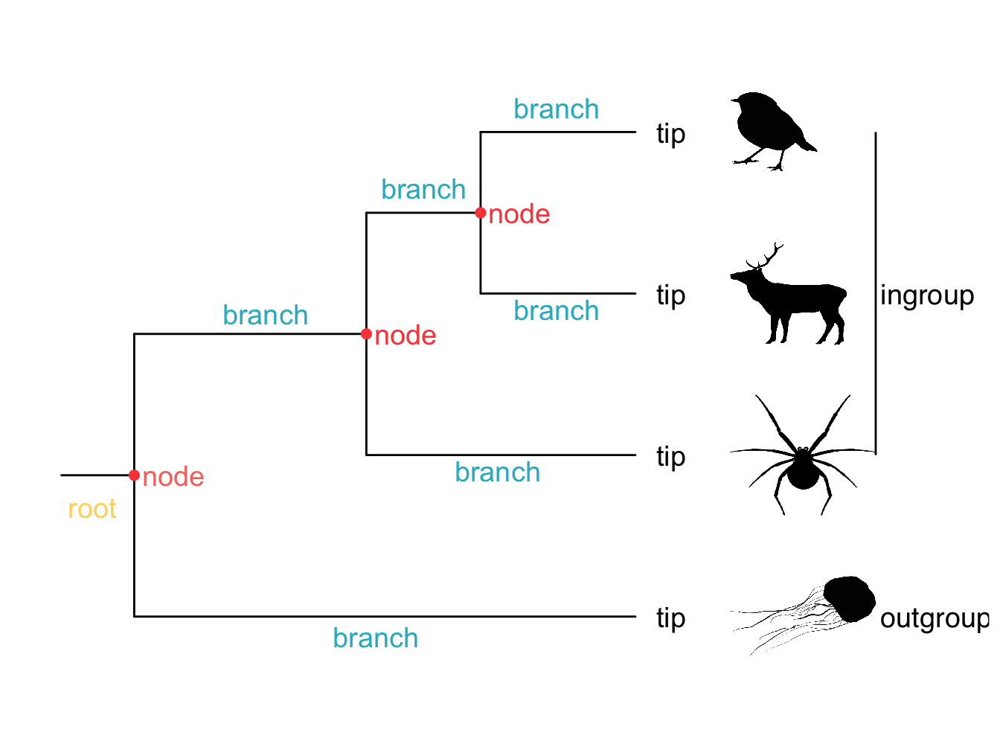
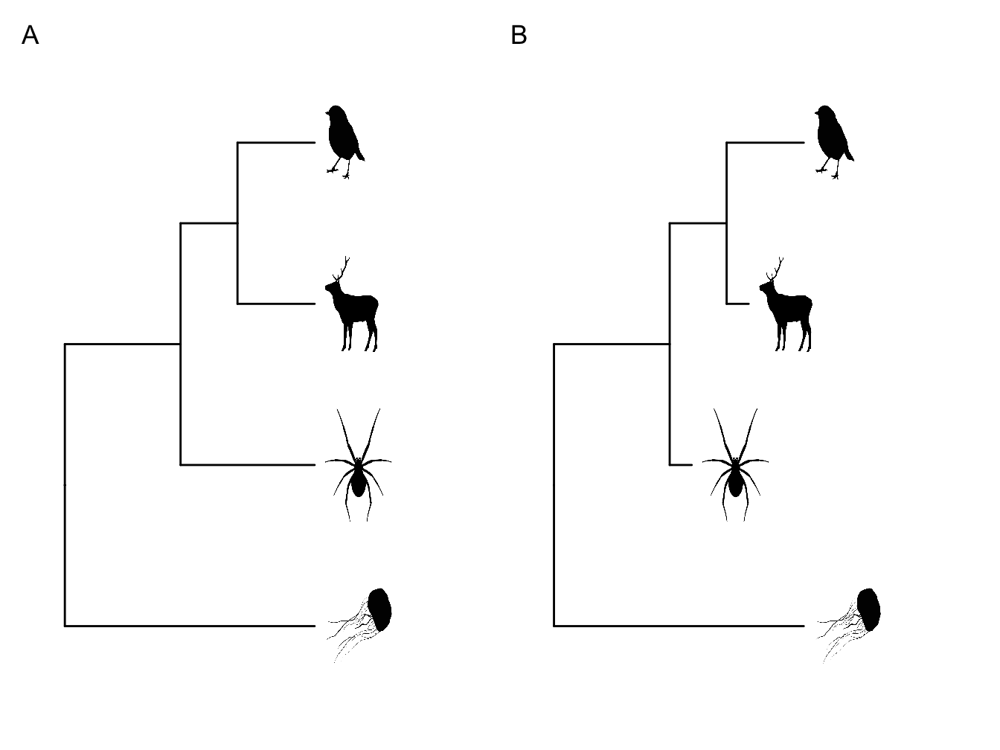
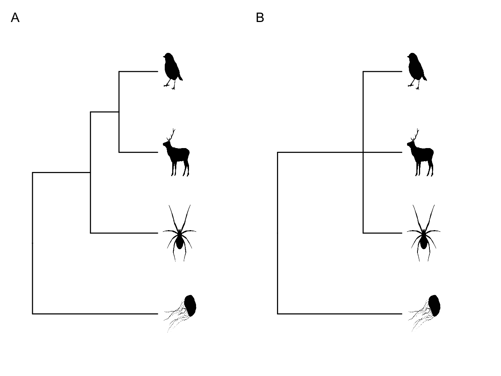
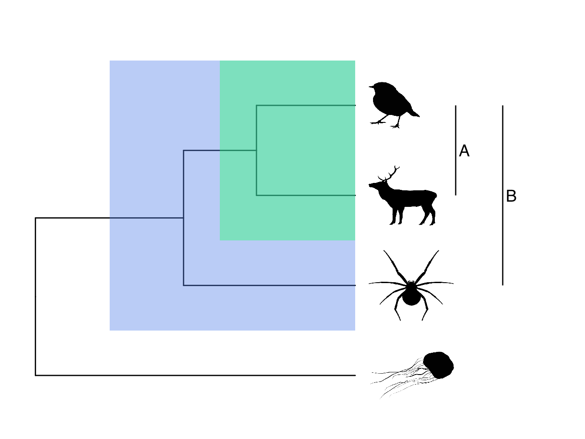
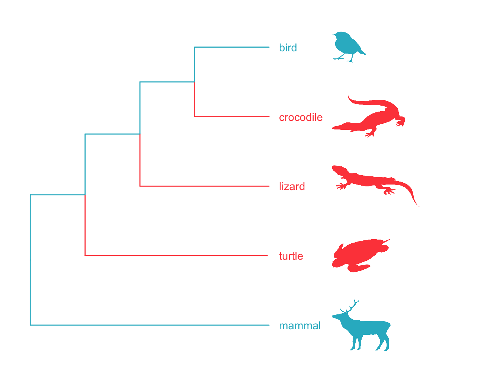
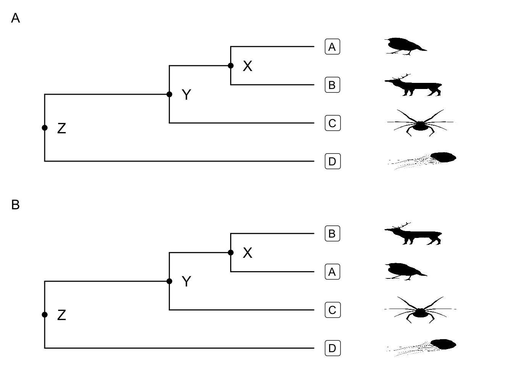
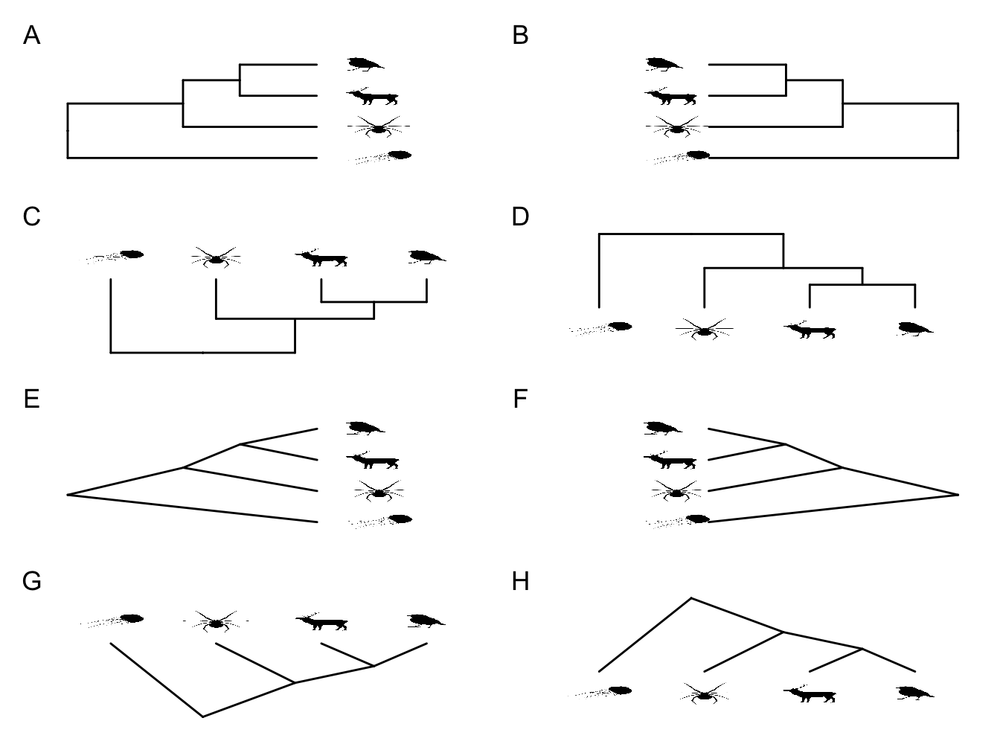
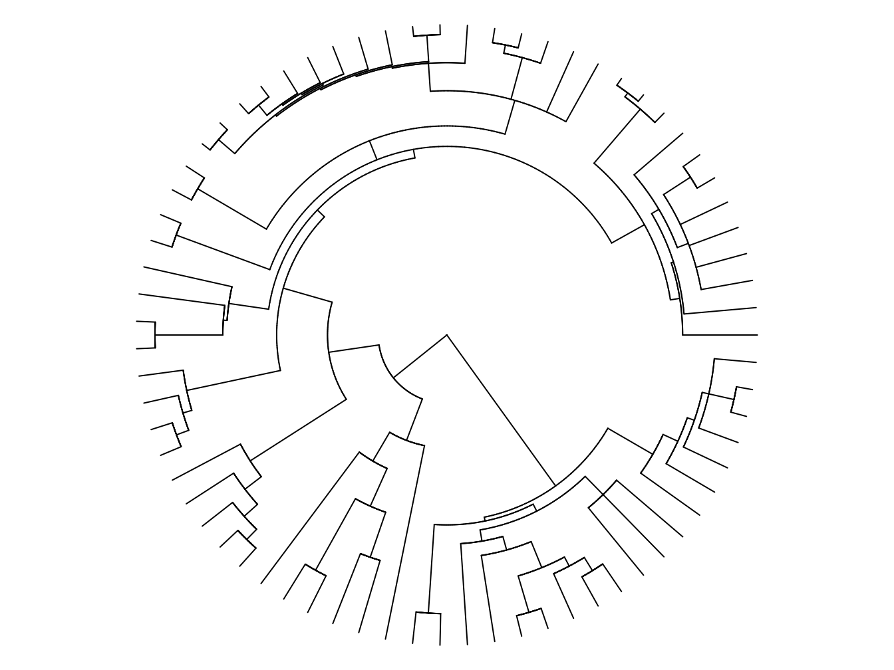
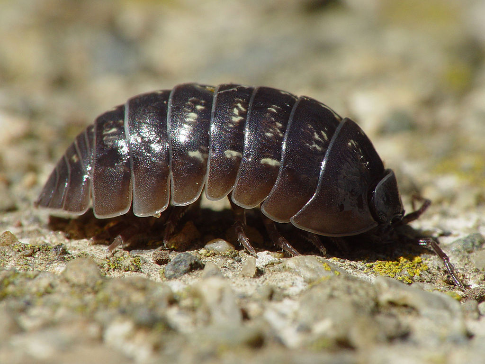

Chapter 2 Foundations 1: introduction to phylogenies and comparative data
[CHAPTER OPENING STYLE STILL TBC AND WILL BE CONSISTENT ACROSS CHAPTERS. CURRENT CONTENT IS PLACEHOLDER ONLY]
Before we use comparative methods, we need to understand some basic concepts about phylogenies, comparative data, and the models underlying them. In this chapter we will cover:
- Phylogenies.
- Basic introduction.
- How are phylogenies inferred?
- Reading and using phylogenies.
- Comparative data
- basics.
2.1 A basic introduction to phylogenies
At its simplest, a phylogeny or phylogenetic tree is a branching diagram that shows how species are related. The ancestor of all of the species is found at the root of the tree, with the species at the tips. The rest of the tree is made up of nodes and branches. Nodes show us where speciation events have occurred, i.e. where one species has evolved into two (or more) new species. The branches show the relationships among nodes and tips (Figure 2.1).
Most phylogenies are rooted, meaning that the ancestral node or root is identified. Phylogenies are rooted using an outgroup. The outgroup can be one or more species, and represents a species or group known to lie outside the group of interest, the ingroup. The root lies on the node that joins the outgroup to the ingroup. In an unrooted tree, no root is defined, meaning while we can look at the relationships among species, we cannot identify ancestral characteristics or how species change through time. This limits their usefulness, especially for comparative methods.
Some phylogenies only show the topology, i.e. the shape of the relationships among the species. Most phylogenies, however, will have some information about the timing of branching events. In these phylogenies, branch lengths can represent absolute or relative time elapsed, or amounts of character change. Most of the phylogenies we use will be dated phylogenies (or chronograms), where the branch lengths represent divergence times.
Note that throughout the Primer for simplicity we generally refer to “species” at the tips of phylogenies. In some cases, the tips will actually be genera or populations, or other operational taxonomic units (OTUs). Before beginning a comparative study, remember to check what the tips are in the phylogeny you are using.

Figure 2.1: A simple phylogeny demonstrating the key features of phylogenetic trees.
To use phylogenies we need to understand a few more terms. These are also described in the Glossary (Chapter 10) if you forget these at any point.
Ultrametric. Most of the phylogenies we will use in this book are ultrametric where all the branches end at the same place - the present-day (Figure 2.2A). If you are using phylogenies containing extinct species then the phylogeny will usually be non-ultrametric (Figure 2.2B). A key thing to remember when using phylogenies, especially ultrametric phylogenies of living species only, is that extinct species are missing. Exactly how large a problem this might be for comparative methods is unclear, because we can never know how many extinct species we are missing due to the patchiness of the fossil record. But it something we need to consider.

Figure 2.2: Ultrametric (A) and non-ultrametric (B) phylogenies. In (B) the deer and spider have gone extinct before the present day.
Polytomies. The phylogenies we will use in this book will be fully resolved, i.e. each node will lead to two branches. This might not always be the case, however. When more than two branches originate from a node we call this a polytomy (Figure 2.3B). Polytomies can be hard or soft. Hard polytomies represent the true evolutionary history of a group, often occurring where there has been rapid evolution. Soft polytomies, on the other hand, represent problems in phylogenetic inference (see below) where the methods cannot resolve the relationships among the species at that point.

Figure 2.3: A fully resolved phylogeny (A) versus one with a polytomy (B). This polytomy suggests that the relationships among the deer, the robin and the spider are unresolved.
Monophyly and clades. A group of species that all share a common ancestor are referred to as a monophyletic group or a clade (Figure 2.4). Often, common taxonomic groupings e.g. mammals, are also monophyletic groups. Sometimes, taxonomic groups are nested within other taxonomic groups in a phylogeny, for example birds are nested within reptiles so that although birds are a monophyletic group, reptiles are a paraphyletic group (Figure 2.5). We can also have polyphyletic groups where the group members appear in multiple lineages across a phylogeny, for example the group formed by birds and mammals (Figure 2.5).

Figure 2.4: Phylogeny highlighting the monophyletic groups or clades. A is a clade made up of the deer and the robin. B is the more inclusive clade including the deer, the robin and the spider.

Figure 2.5: Phylogeny showing the relationships among birds, mammals and reptiles. Reptiles forms a paraphyletic group because birds is nested within it. The group formed by birds and mammals is a polyphyletic group.
2.1.1 Reading and interpreting phylogenies
We can read/interpret the phylogeny in Figure 2.6 as follows. A and B are each others’ closest relatives. They share a common ancestor at node X. We can think of the branch leading to node X as the shared evolutionary history of A and B, while the branches leading from node X to A and B represents their independent evolution after speciation. A and B form a monophyletic group, or clade. They are also sister species.

Figure 2.6: How to read a phylogenetic tree
Both A and B are equally closely related to C, as they all share a common ancestor at node Y. Note that B is not more closely related to C just because it is next to it at the tips. We could also represent the relationship as shown in the second panel with the branch leading to B and A rotated.
Reading phylogenies is not always intuitive. Often this is due to how we represent them graphically. For example, each of the phylogenies in Figure 2.7 shows the same relationships among species, but in different ways. By convention we usually present phylogenies with the root at the left or the base of the phylogeny (like A, C, E, or G in Figure 2.7).

Figure 2.7: All of these phylogenies show the same species relationships, they are just presented in different ways
We can also use circular or fan shaped phylogenies (Figure 2.8) when we have large phylogenies that are hard to fit onto a page.

Figure 2.8: An example of a fan or circular phylogeny. Tip labels have been omitted to make it easier to see the shape of the tree.
If you find reading and understanding phylogenies difficult, we highly recommend trying the Tree Thinking challenge at https://science.sciencemag.org/content/sci/suppl/2005/11/07/310.5750.979.DC1/Baum.SOM.pdf (Baum, Smith, and Donovan 2005), which should help you get the hang of it.
2.1.2 How do we infer phylogenies?
We could write a whole book just about inferring phylogenies. In fact, there already are several e.g. (Felsenstein 2004), and there will be another Primer focusing on this subject if it’s something you need/want more details on! Here we will just cover the basics, focusing on the information you’ll need to be able to understand the rest of the book.
Note that we infer phylogenies. We do not build or create them. This is because whatever clever methods we use, we can never truly know the evolutionary history of most groups until someone invents a time machine!
Most phylogenies are built using molecular or morphological data. Molecular data is usually a gene sequence, with the genes used depending on the question, but can also be amino acid or protein sequences. For distinguishing relationships among close relatives, fast-evolving genes such as those in mitochondria or chloroplasts might be used, whereas protein-coding genes or whole genomes might be more appropriate for looking at relationships among ancient lineages. Collecting molecular data these days might be as simple as downloading it from GenBank, however, the sequences still need to be aligned which can take more time.
Morphological data is generally in the form of cladistic matrices where each character or trait of a species is coded as an integer. For example, a tail might be coded as 0 (absent) or 1 (present). Selecting characters for morphological phylogenies can be tricky, as they need to encompass the synapomorphies or unique characters that define clades in the tree, but the characters should also be independent of one another. Careful consideration of how characters should be coded is also needed, and this can vary from study to study.
Once the data have been collected they can be plugged into one of a number of software packages that will apply one or more phylogenetic inference methods to output the “best” tree or trees. Here we will just mention the three most used inference methods: parsimony, Maximum Likelihood and Bayesian.
Note that one common feature of all phylogenetic inference methods is that they are computationally intensive. Why? If you have three species, there are three possible ways those three species could be related in a fully-resolved tree. If we have ten species there are \(34,459,425\) possible trees! If we have 50 species we have \(2.75292 × 10^{76}\) possible trees (if you want to work this out for yourself, the equation used is \(N_{trees} = (2n-3)!/2^{n-2} * (n-2)!\); (Felsenstein 2004)). To put that in context, that’s more trees than there are stars in the sky, or grains of sand on Earth. That’s a lot of possible trees… This means that no phylogenetic inference method can afford to search all of tree space, i.e. the universe of all possible trees. Instead, each method applies number of analytical tricks to avoid this, although we will not go into detail about this here.
2.1.2.1 Parsimony
Parsimony has fallen out of favour as a method of phylogeny building in recent years, but it is still probably the best, and fastest, way to build phylogenies using morphological data. Parsimony works on the basis that the simplest solution is best, so the algorithms select the tree that accounts for the data with the fewest changes in character states across the tree, and outputs the most parsimonious phylogeny or phylogenies that satisfy that criterion.
Ideally, this will result in one most parsimonious tree, but often more than one phylogeny meets this criterion. In these cases it is usual to create a consensus tree, an average topology across all the most parsimonious trees. There are several ways to construct these, from strict consensus trees that include only relationships shown in all most parsimonious trees, to majority rule consensus trees that include all relationships found in at least 50% of the most parsimonious trees. Consensus trees are one way that polytomies can be introduced into phylogenies (see Figure 2.3).
2.1.2.2 Maximum Likelihood (ML)
Maximum Likelihood is a statistical method for estimating the unknown parameters of a model. Likelihood is proportional to the probability of observing the data given the model, P(data|model). The Maximum Likelihood solution is the one that has the highest Likelihood, i.e. the model that best describes the observed data. We will use Maximum Likelihood throughout this book to estimate parameters in many different types of models.
In the case of phylogenetic inference, our model is the tree and an evolutionary model describing how the trait data (e.g. gene sequences or morphological characters) change. We therefore use Likelihood to calculate the probability of the observed trait data given the phylogeny and evolutionary model. The method selects the tree that best accounts for the data, i.e. the phylogeny or phylogenies with the Maximum Likelihood.
Maximum Likelihood is considered to be a better phylogenetic inference method than parsimony for molecular data because we can explicitly define the underlying evolutionary model of DNA evolution, rather than just assuming the smallest number of changes gives the best tree. Remember that DNA is made up of four bases (cytosine [C], guanine [G], adenine [A] and thymine [T]), and these can be split into pyrimidines (C and T) and purines (A and G). Changes from C to T (and vice versa), or A to G (and vice versa), are called transitions, and these appear to be easier and thus occur at a higher rate than transversions, i.e. changes from C to A (and vice versa), or C to G (and vice versa), or T to A (and vice versa), or T to G (and vice versa). The frequencies of bases can also vary. Multiple models of DNA sequence evolution exist that take into account these various factors. The most commonly used are:
- JC. Jukes Cantor (Jukes, Cantor, and others 1969). This is the simplest model possible. All base changes are equally likely; base frequencies are equal.
- K2P. Kimura 2 parameter (Kimura 1980). Transitions and transversions have different substitution rates; base frequencies are equal.
- HKY85. Hasegawa-Kishino-Yano-85 (Hasegawa, Kishino, and Yano 1985). Transitions and transversions have different substitution rates; base frequencies can vary.
- GTR. General Time Reversible (Lanave et al. 1984). All six types of base change (A to C, A to G, A to T, C to G, C to T, and G to T) occur at a different rate, and base frequencies vary.
Maximum Likelihood approaches can use any of these models, or any other model we might want to define. It is harder to come up with sensible, simple models of evolution for morphological data (although they do exist, for example the Mkv model; (Lewis 2001)), thus Maximum Likelihood approaches are used less often for morphological datasets.
Maximum Likelihood approaches are very computationally intensive and can be very slow, certainly much slower than parsimony. Like parsimony, often more than one phylogeny has the same Maximum Likelihood so we construct consensus trees.
2.1.2.3 Bayesian
Bayesian methods calculate the probability of the model given the data, P(model|data). In the case of Bayesian phylogenetic inference, we calculate the probability of the observed phylogeny given the trait data and the underlying evolutionary model. These models are the same as those used in Maximum Likelihood tree inference.
The main difference between Bayesian approaches and both Maximum Likelihood and parsimony, is that we are no longer searching tree space for the “best” tree or trees. Instead, Bayesian methods output a posterior distribution of trees. The Bayesian method searches tree space, saving and outputting all trees it finds at regular intervals. This can result in thousands or even millions of possible trees. The user then specifies how many trees they would like to export as a posterior distribution of trees. This will consist of that number of trees, spread across the variety of trees inferred, but with the frequency of their occurrence being based on their probability. For example, if your Bayesian method produces tree topologies A-Z, but topologies A-D are most common, the posterior distribution of trees will mirror that and will contain more trees with topologies A-D, than those with topologies E-Z.
The reasoning behind this is that phylogenetic inference is complex, so the probability of there being just one (or a few) trees that best represent the relationships among species is unlikely. With Bayesian approaches it is possible to get a clearer idea of phylogenetic uncertainty, and to actually incorporate this into our understanding of species relationships and downstream comparative analyses.
Because of the way posterior distributions are constructed, consensus trees are not appropriate for Bayesian phylogenies. Instead, we tend to run each analysis on the whole posterior distribution of trees, resulting in a posterior distribution of results. This can be a little more difficult to visualise, but gives a much better understanding of the effect of phylogenetic uncertainty on comparative analyses.
2.1.2.4 Branch support
The trees produced in all three of the methods above may contain measures of branch support. These will be shown as numbers above or below the nodes of the phylogeny if you’re looking at the published version. Branch support measures tell you how much support there is for a particular branching pattern. There are many ways we can estimate branch support in a phylogeny (Felsenstein 2004), but the details are not important here. The key thing to remember is that the higher the branch support value, the more confidence we have in that particular branch. Usually these methods give numbers that range from 0-100 (e.g. bootstrap values), but other measures (e.g. posterior probabilities) range from 0-1. It should be obvious whether a 0-100 or 0-1 scale is being used from the range of numbers you can see. It’s also common for people to collapse branches with low support leading to polytomies.
2.1.3 Where do we get phylogenies from for comparative analyses?
Above we explained how phylogenies are inferred, but you have probably gathered by now that we are not experts in phylogenetic inference! So where do we get phylogenies from for comparative methods? The simple answer is the Internet! Less flippantly, we get them from the published literature. Generally people publishing phylogenies will provide a NEXUS or Newick file containing their phylogeny as part of their supplementary materials. This is often a file ending in .nex or .tre. In the online materials we show you how to read these files into R, and explain more about how these files are structured. If an author has not provided their phylogeny in a format you can read into R (for example they may just have provided a PDF of the topology) you can email them and see if they are willing/able to give you a copy. Some researchers also store phylogenies in online databases such as Treebase.
How do you choose the “best” phylogeny for your group? There is no hard or fast rule here, but we do recommend taking some time to think about this carefully. In some taxonomic groups you will have no choice as there may only be one existing phylogeny. In other groups you may be spoiled for choice. How you make the decision will also depend on how much you already know about the group in question. Some questions to ask that may guide you to the best phylogeny include:
- Given your knowledge of the group, does the taxonomy they have used and the characters used to infer the tree make sense? This may be particularly important for morphological trees, but it is also important to check they used an appropriate gene if using molecular trees.
- How many of your species are included in the phylogeny? You can add or remove species easily in R (see online materials), but if many species are missing it may be better to choose an alternative tree. You can also stitch together multiple trees (see online materials).
- What kind of method was used to infer the phylogeny? Does it seem appropriate to you? A phylogeny using molecular data but inferred using parsimony may ring alarm bells…
- Are the branches of the phylogeny well-supported? We didn’t talk about branch support above, but you’ll often see numbers above the nodes on a phylogeny. These tell you how well supported the relationships are, and generally range from 0-100 or 0-1. Good values will be close to 100 or 1 depending on the method used.
- Are there lots of polytomies or is the phylogeny well-resolved? The methods we use in R can cope with polytomies (see online materials) but if there are more resolved phylogenies available these will be better.
- Can you access several different versions of the phylogeny, or a posterior distribution of phylogenies to account for phylogenetic uncertainty?
- If you don’t know the group, or phylogenetics, well, don’t be afraid to ask the opinion of someone who knows more than you. They may save you hours of pain and indecision!
Inferring phylogenies is really difficult. We make many assumptions and choices at each stage of the process, from data collection to building consensus trees. As such, phylogenies are unlikely to give us the “true” evolutionary history of a group. Instead phylogenies are hypotheses about the way evolution happened. It is crucial to remember this when applying and interpreting comparative methods. Even if your comparative method is perfect in every way, you are still basing your analysis on a hypothesis about how species evolved. If this is incorrect, and it almost certainly is (due to missing extinct species etc.), then your results may not be as robust as you imagine.
2.2 Comparative data
2.2.1 Sources of comparative data and data quality
We have talked above about where we get phylogenies from, but what about the comparative data itself? There are a number of options and these will vary depending on your question and the data availability for your study group. Most comparative data will come from a range of sources, including peer-reviewed literature, books, field guides, Internet searches, and curated databases. You can also collect some data from species in the field (e.g. behavioural data) or from museum specimens (e.g. morphological data). The quality of data from these different sources will vary, so care is needed.
The results of comparative analyses are only as good as the data you put into them. Any choices you make in summarising the data need to be recorded and reported in your paper/thesis/report/supplementary material.
2.2.1.1 Peer-reviewed literature, books, field guides, and internet searches.
The easiest way to collect comparative data is to sit in a library and work through all of the books and journals on your study group looking for the data you need. This is often a robust technique, as you can be fairly confident in the legitimacy of these sources, and for some groups these data have not yet been uploaded to the Internet. It is also possible to do all of this using Internet searches instead, but it is important to check the source of any information provided. Journal articles and professional web-pages are likely to be fine, but other web-pages may not always state the source of their information. You should be prepared to make judgement calls about whether you trust a particular source and want to include it in your dataset.
Collecting data manually reveals several issues common to most comparative data collection. It’s a sensible idea to decide how you will deal with these issues should they arise.
- Some sources will be more up-to-date than others. Should you record all the data from all sources, or just focus on the most recent?
- Some sources will give actual values whereas others will give approximations. Should you record any data you find, or remove approximations?
- Some data will be based on multiple individuals whereas others will be based on only one.
- Some sources will list values as means, others will list values as maxima or minima. Will you record all of these or choose one?
There are of course many ways to do this, and as long as you record the decisions you have made so that someone could repeat the process if necessary, this is not a problem. Our recommendation is to record all data initially, along with some measure of data quality (low, medium or high is sufficient). You can still include this data either by incorporating measures of data quality into your analyses, or by excluding data below a certain data quality threshold when calculating summary data for the species. And don’t forget to record the units for each measurement. Finally it is extremely important to record the sources for each datum you add to your dataset, so that you are able to repeat the process if needed. This also allows you to remove data from any sources you later decide not to trust, and allows you to check individual data points if there are any issues, for example if one species appears as a large outlier in your comparative analyses this may reflect an error in data collection.
After collecting your data you’ll likely need to summarise these data for each species or taxon, i.e. take the mean, median, minimum, maximum etc. It is up to you whether you use means or medians. Often we choose the median because it is less influenced by outliers. The summary data you use and how you calculate it will vary depending on your inputs, for example, if we have maximum values for a variable, we might want to take the overall maximum for the species, but if we have mean values, we might want to take the median for the species (see below). This process may seem trivial, but can have a large influence on your results.
2.2.1.2 Curated databases
Curated databases are popular sources of comparative data. Some will be constantly added to as more data become available e.g. GBIF. Others are static, often because they were released as part of a published paper e.g. Meiri reptile dataset. These sources are popular because you can rapidly download data for a large number of species, making it much faster than going through books and literature manually. But just because a value is published in a database does not mean that it is reliable. The issues noted above still apply, and it is a good idea to check the data and sources of a database in the same way as for books or Internet searches.
2.2.2 What’s in a name?
You’re probably familiar with using scientific names rather than common names for species so that all know we are talking about the same thing. My personal favourite example of this is the animal below. I’d call it a woodlouse, most people from the USA would call it a pill bug, but they can be called a huge range of things including slaters, roly-polies, cheesey-bugs, butchy boys, chisel bobs and monkey peas. And that’s just in English. Language is a magnificent thing!

woodlouse
To avoid confusion we use scientific names, for species a “Genus species” pairing that we call the binomial name. You’ll have these scientific names in both your phylogeny and comparative data, and these names will allow you how to link the two together. Great! There is, however, a problem. Scientific names are not static entities, they change regularly. Sometimes species are split and one species becomes two or more species. One will keep the original name, the others will get new names. Sometimes species are lumped and two or more species will be merged into one species. Other times species names are just changed, either to correct a spelling mistake or for more more esoteric reasons related to the rules of taxonomy (the science of naming species). Genera, families, orders etc. may also undergo name changes.
There are detailed rules about how and why scientific names change, and what they can changed to, but we don’t need to go into this here, you just need to know that names change. If you’re collecting data from a range of sources, this means the names of the species might not be the same in these different sources. Likewise, the names in your data might not match those in your phylogeny. This can have consequences for the sample size of your analyses, as we can only include species that are found in both the data and the phylogeny in our analyes (though see the online materials for ways to add species to a phylogeny where needed).
For the most part this is fairly easy to fix. The first step is to decide what taxonomy, or list of accepted names, you want to use for your analyses. We’d recommend asking someone who knows a bit about the group, or seeing what other people have done in published papers. Well-studied groups like mammals, birds, amphibians and reptiles have standardised lists that you can easily access online. For other groups you might have to trawl through PDFs.
Then correct the taxonomy of the species in your data and phylogeny so they match the species in the taxonomy you’ve chosen to use. If the species name you are using is out of date, you’ll normally find it under the synonyms for a species. Synonyms are other names that are used to refer to the species. The name you want is the accepted name that your species name is the synonym of.
Practicalities of comparative data collection
How do we practically collect and record comparative data? Let’s imagine we have the following three sources of chameleon body length and life history data.
SOURCE 1: Smith et al. 2020.
- Chamaeleo chamaeleon. 245 mm, 80 eggs, sexually dimorphic.
- Brookesia minima. 33 mm, 2 eggs, sexually dimorphic.
- Calumma parsonii. 650 mm, 50 eggs, sexually dimorphic.
SOURCE 2: Jones et al. 2020.
- Chamaeleo chamaeleon. Up to 250 cm, Up to 100 eggs.
- Brookesia minima. Up to 34 mm, 2 eggs.
- Calumma parsonii. Up to 695 mm, Up to 50 eggs.
SOURCE 3: Han et al. 2020.
- Chamaeleo chamaeleon. Approximately 10 inches.
- Brookesia minima. Approximately 1 inch.
- Calumma parsonii. Approximately 24 inches.
We would tend to record these data in a table (probably in Excel or another spreadsheet program) like this.
| Species | Measurement | Value | Data_Type | Units | Data_Quality | Approximation | Source |
|---|---|---|---|---|---|---|---|
| Chamaeleo chamaeleon | length | 245 | mean | mm | high | FALSE | Jones et al 2020 |
| Chamaeleo chamaeleon | clutch size | 80 | mean | eggs | high | FALSE | Jones et al 2020 |
| Chamaeleo chamaeleon | dimorphic | 1 | truefalse | NA | high | FALSE | Jones et al 2020 |
| Brookesia minima | length | 33 | mean | mm | high | FALSE | Jones et al 2020 |
| Brookesia minima | clutch size | 2 | mean | eggs | high | FALSE | Jones et al 2020 |
| Brookesia minima | dimorphic | 1 | truefalse | NA | high | FALSE | Jones et al 2020 |
| Calumma parsonii | length | 650 | mean | mm | high | FALSE | Jones et al 2020 |
| Calumma parsonii | clutch size | 50 | mean | eggs | high | FALSE | Jones et al 2020 |
| Calumma parsonii | dimorphic | 1 | truefalse | NA | high | FALSE | Jones et al 2020 |
| Chamaeleo chamaeleon | length | 250 | max | mm | high | FALSE | Smith et al 2020 |
| Chamaeleo chamaeleon | clutch size | 100 | max | eggs | high | FALSE | Smith et al 2020 |
| Brookesia minima | length | 34 | max | mm | high | FALSE | Smith et al 2020 |
| Brookesia minima | clutch size | 2 | max | eggs | high | FALSE | Smith et al 2020 |
| Calumma parsonii | length | 695 | max | mm | high | FALSE | Smith et al 2020 |
| Calumma parsonii | clutch size | 50 | max | eggs | high | FALSE | Smith et al 2020 |
| Chamaeleo chamaeleon | length | 10 | mean | inches | medium | TRUE | Han et al 2020 |
| Brookesia minima | length | 1 | mean | inches | medium | TRUE | Han et al 2020 |
| Calumma parsonii | length | 24 | mean | inches | medium | TRUE | Han et al 2020 |
We would also record the full reference for each source in a separate table. Recording the data like this makes it easy to enter in Excel, and also makes it easy for us to exclude certain types of data or sources should we decide we don’t trust them enough to include in our analyses.
Note that this will not be the ideal format for using the data in R, so you will need to manipulate or wrangle the data first. For most analyses, data need to be in a tidy format, meaning:
- Each variable must have its own column.
- Each observation must have its own row.
- Each value must have its own cell.
In R, the tidyr and dplyr packages are useful for doing this. Or you could use something like Excel if you are less confident with R. Make sure to keep the raw data too in case you accidentally introduce any errors, and so that you can repeat the data collection and analyses if needed. See https://r4ds.had.co.nz/tidy-data.html for more details on what tidy data is and how to do this.
To wrangle this data, we would first convert the units to a standard unit for each measurement. Here we have length in mm and inches, so we would convert the inches into mm. The three altered rows are shown below. Note that converting from inches to mm gives us the false impression of precision, i.e. two values are now 25.4 and 609.6, rather than whole numbers making it look like these were measured accurately rather than approximated. It’s worth looking out for this in other data, especially curated databases where this kind of conversion is typical.
| Species | Measurement | Value | Data_Type | Data_Quality | Approximation |
|---|---|---|---|---|---|
| Chamaeleo chamaeleon | length | 254.0 | mean | medium | TRUE |
| Brookesia minima | length | 25.4 | mean | medium | TRUE |
| Calumma parsonii | length | 609.6 | mean | medium | TRUE |
Next we might decide to exclude low quality records, and remove any approximations. We might need to do something more complicated if we only have one record for a species and it is an approximation. In this case we are going to keep the approximations, and use all the data. But you should choose what is sensible for your dataset.
Finally, we want to summarise the data for each species, to get means/medians and possibly also minima and maxima. It is up to you whether you use means or medians. Often we choose the median because it is less influenced by outliers. The summary data you use and how you calculate it will vary depending on your inputs for example here we might want to extract:
- Median of mean length values. This will tell us about the overall mean value for length across all sources.
- Maximum of maximum length values. This will tell us about the overall maximum value for length across all sources.
- Median of mean clutch size values. This will tell us about the overall mean value for clutch size across all sources.
- Maximum of maximum clutch size values. This will tell us about the overall maximum value for clutch size across all sources.
- Median dimorphism score. This will tell use whether the species is predominantly considered to be dimorphic or not.
Our final dataset for analyses might look something like this.
| Species | median_length | max_length | median_clutchsize | max_clutchsize | dimorphic |
|---|---|---|---|---|---|
| Brookesia minima | 29.2 | 34 | 2 | 2 | NA |
| Calumma parsonii | 629.8 | 695 | 50 | 50 | NA |
| Chamaeleo chamaeleon | 249.5 | 250 | 80 | 100 | NA |
Note that each variable is now its own column. This will help us when using the data in analysis programs like R. R code to achieve the above can be found in the online materials.
[CHAPTER ENDING MATERIAL STYLE STILL TBC BUT WILL BE CONSISTENT ACROSS THE BOOK]
2.3 Summary
2.4 Online materials
Online materials for this chapter are:
- Data wrangling comparative data in R
- Understanding, plotting and manipulating phylogenies in R
2.5 MCQs
2.6 BOXES
2.7 Bigger picture panel
Something about data quality? Choosing the best tree? Could one of these bits be repurposed as a box here?
Bibliography
Baum, David A., Stacey DeWitt Smith, and Samuel S. S. Donovan. 2005. “The Tree-Thinking Challenge.” Science 310 (5750): 979–80. https://doi.org/10.1126/science.1117727.
Felsenstein, Joseph. 2004. Inferring Phylogenies. Vol. 2. Sinauer associates Sunderland, MA.
Hasegawa, Masami, Hirohisa Kishino, and Taka-aki Yano. 1985. “Dating of the Human-Ape Splitting by a Molecular Clock of Mitochondrial Dna.” Journal of Molecular Evolution 22 (2): 160–74.
Jukes, Thomas H, Charles R Cantor, and others. 1969. “Evolution of Protein Molecules.” Mammalian Protein Metabolism 3 (21): 132.
Kimura, Motoo. 1980. “A Simple Method for Estimating Evolutionary Rates of Base Substitutions Through Comparative Studies of Nucleotide Sequences.” Journal of Molecular Evolution 16 (2): 111–20.
Lewis, Paul O. 2001. “A Likelihood Approach to Estimating Phylogeny from Discrete Morphological Character Data.” Systematic Biology 50 (6): 913–25.